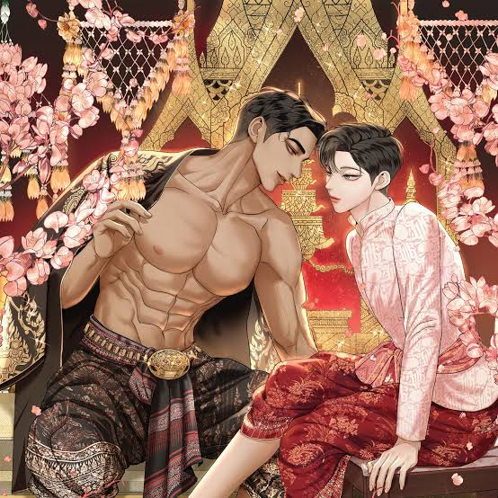

หมวดศิลปะดิจิทัล (Digital Art)

ศิลปะดิจิทัล (Digital art) คือรูปแบบงานศิลปะอย่างหนึ่งที่ใช้เทคโนโลยีดิจิทัลเป็นส่วนหนึ่งในกระบวนการสร้างสรรค์และนำเสนอชิ้นงาน นอกจากนี้ยังสามารถหมายถึงศิลปะคอมพิวเตอร์ที่ใช้และมีปฏิสัมพันธ์กับสื่อดิจิทัลได้อีกด้วย[1] หมวดหมู่ย่อยของศิลปะดิจิทัลจะประกอบด้วยจิตรกรรมดิจิทัล ซึ่งศิลปินจะใช้ซอฟต์แวร์ในการจำลองเทคนิคต่าง ๆ ที่ใช้ในการวาดภาพจริง ภาพประกอบดิจิทัล ซึ่งเกี่ยวข้องกับการสร้างภาพเร็นเดอร์สำหรับสื่อประเภทต่าง ๆ และการทำแบบจำลองสามมิติ ซึ่งศิลปินจะจัดทำวัตถุและฉากต่าง ๆ แบบสามมิติ ส่วนการเก็บรักษางานศิลปะดิจิทัลมักจะเก็บในสื่อกลางทางกายภาพ คลังภาพที่จัดแสดงบนเว็บไซต์ และชุดรวมภาพสำหรับให้ดาวน์โหลดโดยอาจคิดค่าใช้จ่ายหรือไม่ก็ได้